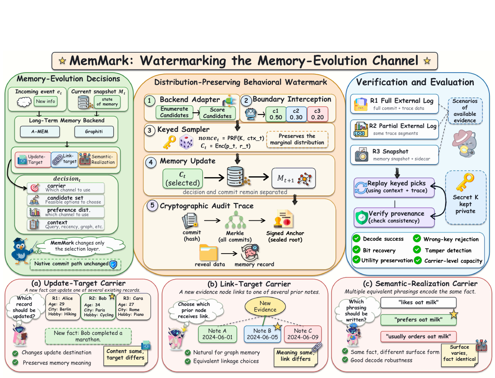
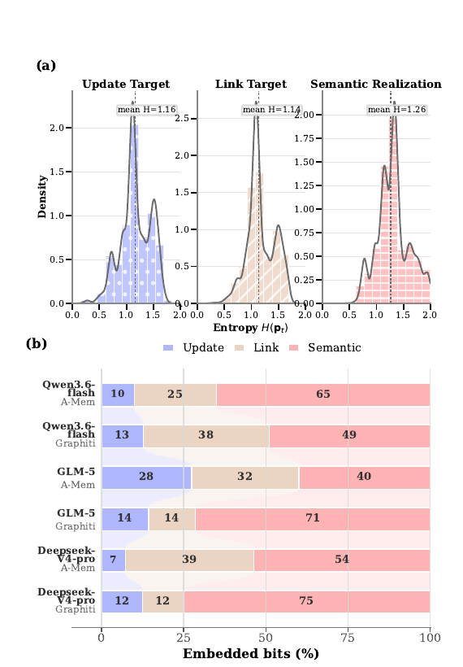
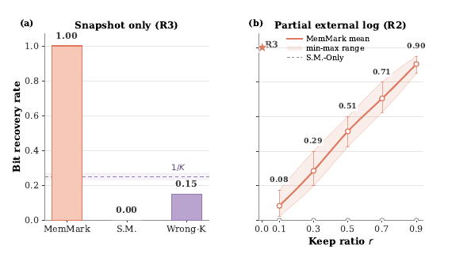
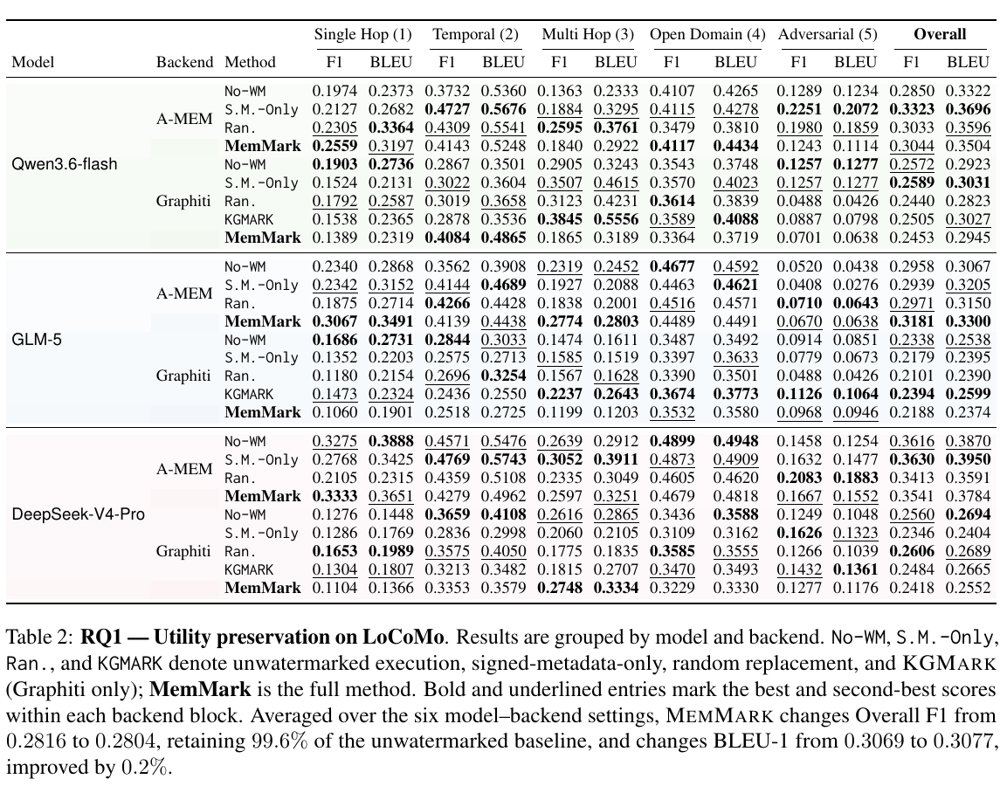
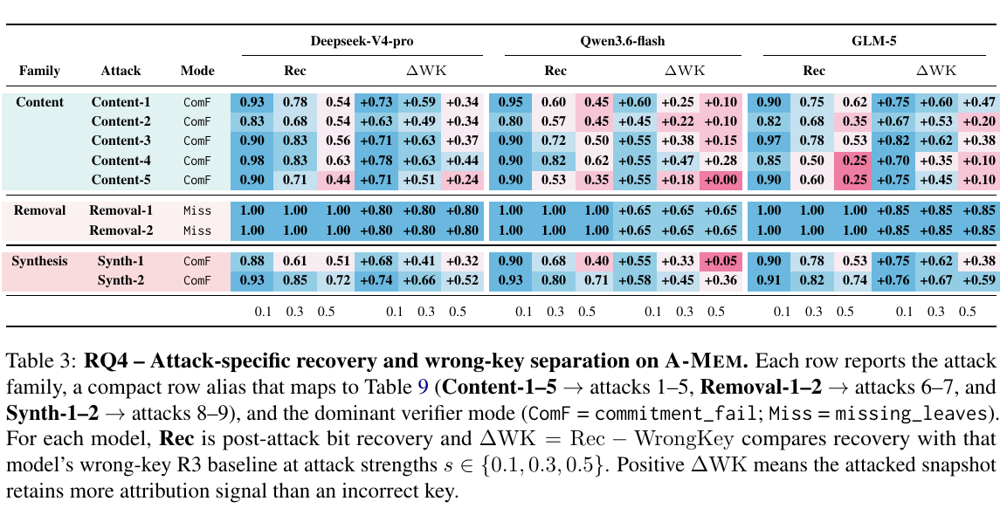

unwatermarked Overall F1 retained
STATE-EVOLUTION ATTRIBUTION
MemMark: Watermarking
the Memory-Evolution Channel
Attribution for long-term agent memory that survives when logs, visible outputs, and trusted metadata do not.
Accepted to Findings of EMNLP 20261Zhejiang University of Technology · 2Independent Researcher · 3National University of Singapore · 4KAUST · 5Bairong · 6Tongji University · 7Universiti Malaya · 8University of Hong Kong

payload bits recovered from snapshots
highest mean carrier entropy
memory-lifecycle attacks evaluated
OVERVIEW
Provenance inside the state transition
MemMark addresses provenance for long-term agent memories when external logs and trusted metadata no longer survive. It embeds an owner-controlled signal into utility-preserving memory-write choices: update targets, links, and equivalent semantic realizations. A secret-keyed sampler preserves the backend preference distribution, while commitments, Merkle logs, signed anchors, and in-record reveal data make those decisions replayable. Across A-MEM and Graphiti on LoCoMo, the method preserves memory utility and supports full payload recovery from final snapshots.
METHOD
One abstraction, three carriers
The watermark occupies natural decision freedom already present in long-term memory backends.
Update target
Select which compatible memory record receives new evidence while preserving the meaning of the write.
Link target
Choose among equivalent prior objects that can be connected to the same new evidence.
Semantic realization
Encode the same fact through one of several semantically equivalent surface forms.
1
Enumerate admissible, scored candidates at the LLM-call boundary.
2
Select with secret-keyed, distribution-preserving sampling.
3
Bind the decision to commitments, a Merkle root, and reveal evidence.
4
Replay R1 full-log, R2 partial-log, or R3 snapshot-only evidence.
EVIDENCE
Capacity and snapshot verification
Results cover six model–backend configurations across A-MEM and Graphiti.


KEY RESULT
MemMark recovers all 40 payload bits from the final snapshot, while signed-metadata-only recovers none and wrong-key verification remains near chance.
RQ1
Utility preservation on LoCoMo
Across three LLM backbones and two memory systems, average Overall F1 changes from 0.2816 to 0.2804. Average BLEU-1 changes from 0.3069 to 0.3077.

RQ4
Attack-specific diagnostics
Content edits, record removal, and synthesis-style mutations trigger distinct verifier signals. Authenticated surviving records remain useful even when evidence is incomplete.

REFERENCE
Cite MemMark
@article{zhang2026memmark,
title = {MemMark: State-Evolution Attribution Watermarking for Agent Long-Term Memory Systems},
author = {Zhang, Haobo and Mao, Xutao and Dong, Guangyuan and Li, Ziwei and Su, Xuanbo and Chen, Kaijie and Yang, Jing and Lin, Zheng},
journal = {arXiv preprint arXiv:2605.25002},
year = {2026},
doi = {10.48550/arXiv.2605.25002},
url = {https://arxiv.org/abs/2605.25002}
}